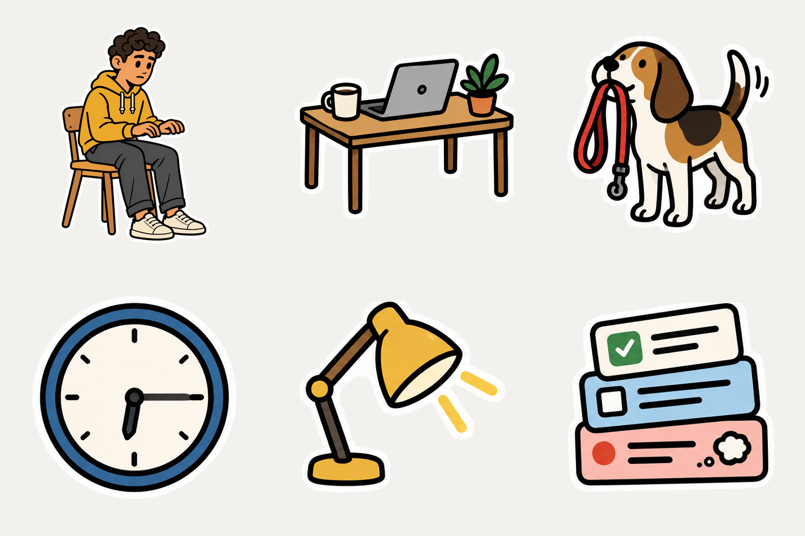
Pi-remote · visual review
Onboarding 素材 Review
集中查看本轮生成的四种风格、第一幕透明贴纸素材，以及两组小狗 24 帧循环动画。
4 种风格
24 个透明 PNG
2 个动态 GIF
24 帧 · 2.88 秒
Current direction
第一幕 · Still at the desk
每种风格包含人物、桌面、小狗、时钟、台灯和会话卡片。所有单体均为透明 PNG，并保留白色 die-cut sticker 描边。
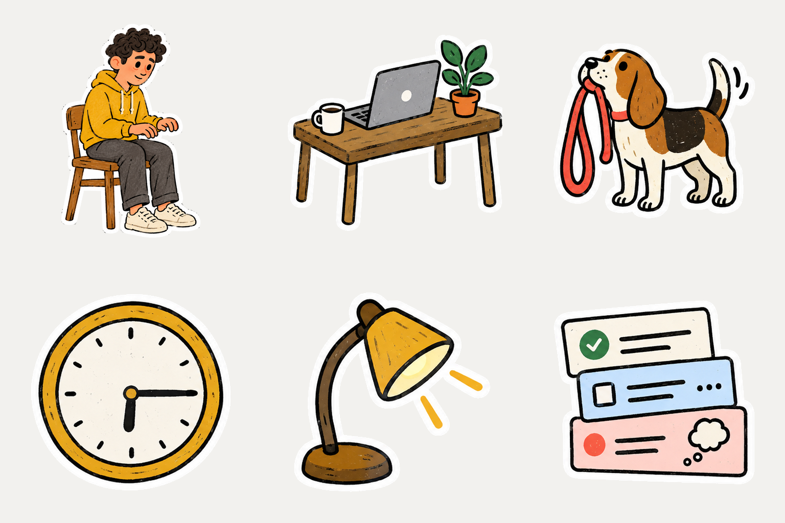
172 · Naive Folk Cartoon
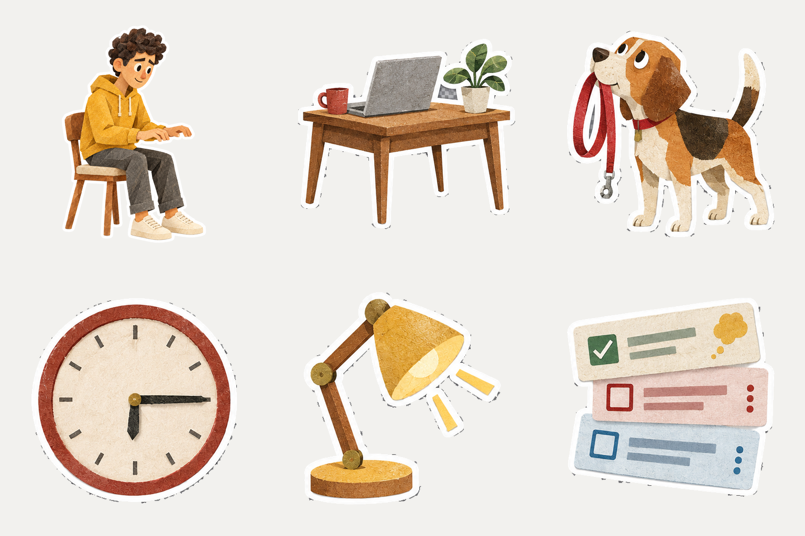
225 · Textured Cut-Paper Collage
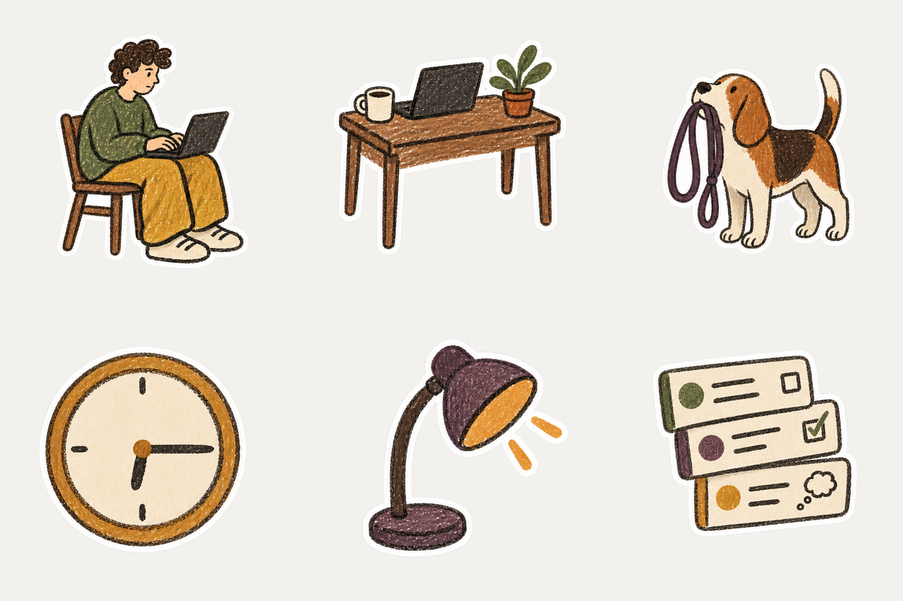
China Marker Deconstruction


Act 2 · New assets
Out with your dog
Static person, ongoing session loop and gentle tail wag.
Earlier comparison
手机遛狗场景 · 三种风格
同一构图用于比较风格。用户通过手机继续 Mac 上的会话。


Motion test
225 风格小狗循环
24 帧纸张拼贴定格动画。主要变化是抬爪、耳朵、头部、尾巴和牵引绳的小幅运动。
Loop preview

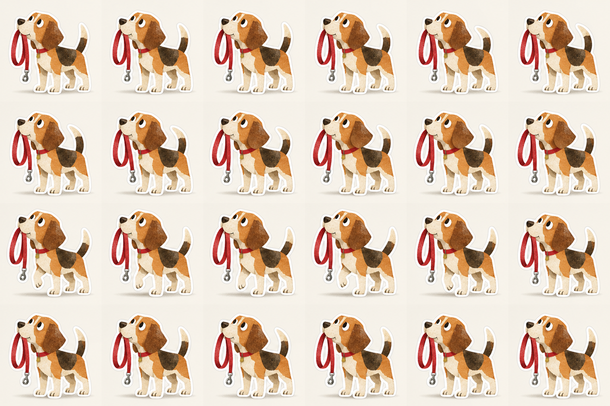
6 × 4 sprite sheet
查看 24 张独立帧
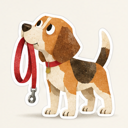
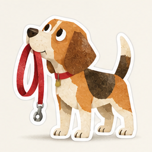
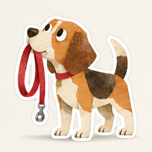
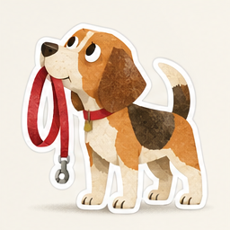
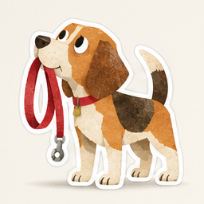
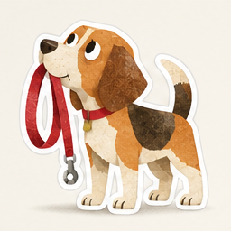
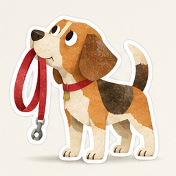
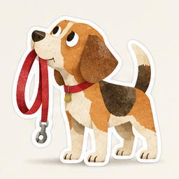
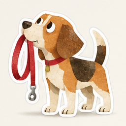
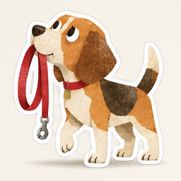
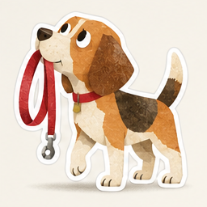
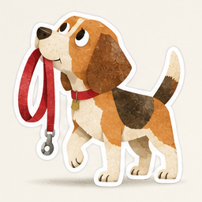
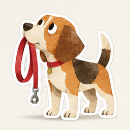
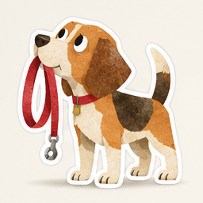
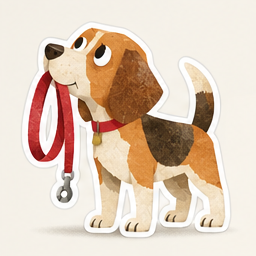
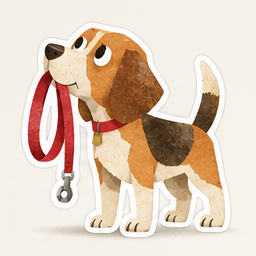
Fourth style
China Marker Deconstruction
抽象、朴拙、解构式社论蜡笔风格。配色可随主体变化；风格由蜡笔材质、开放线条、宽大色块和解构造型保持一致。

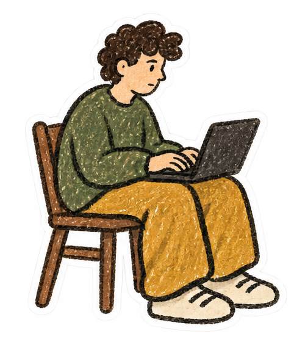
Style example
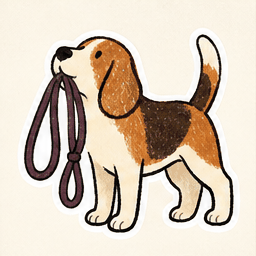
Dog loop
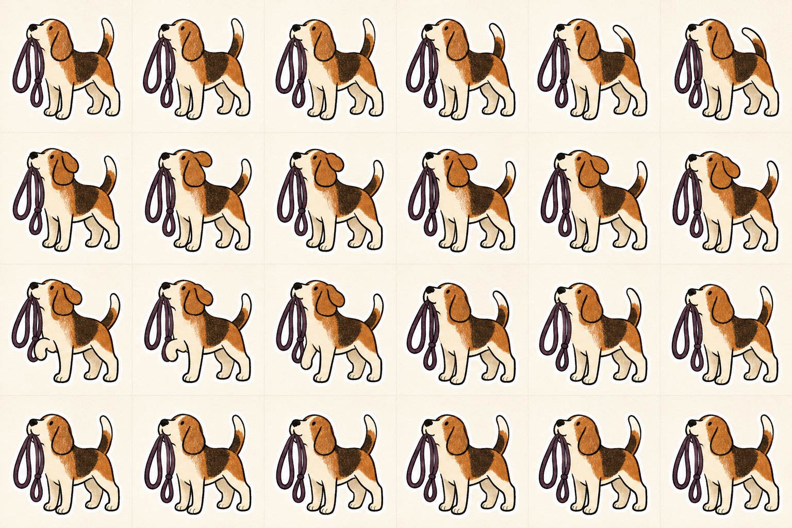
6 × 4 sprite sheet
Discarded
早期错误方向
这组误用了 Build Week 剧本，不属于当前 onboarding。保留在页面底部，仅用于回看生成历史。
不要将这一组用于 onboarding 设计决策。